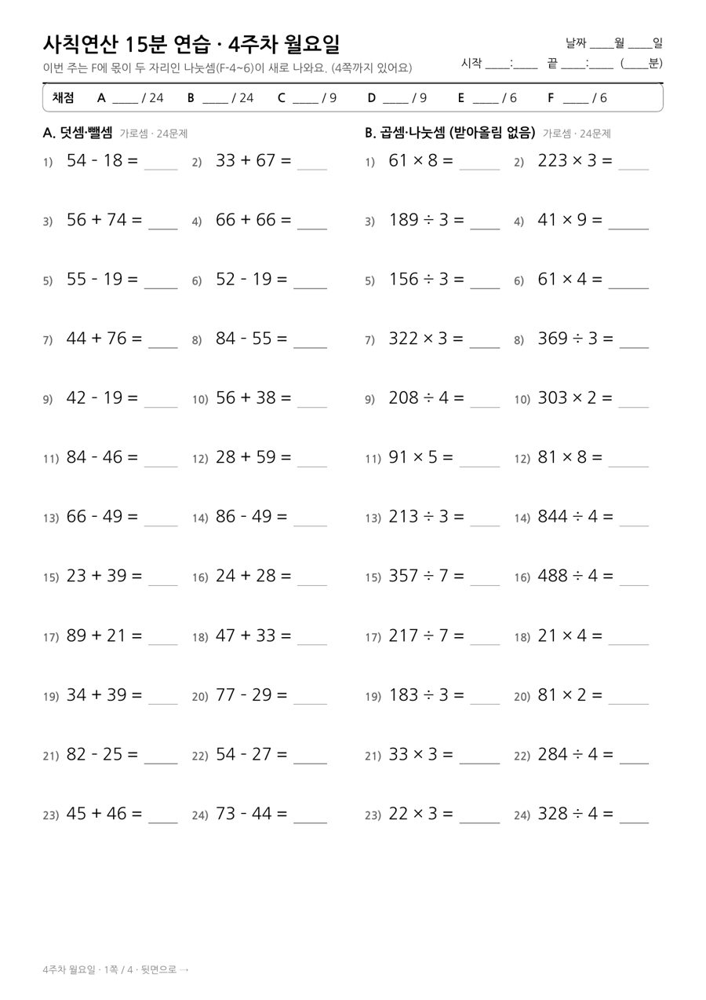
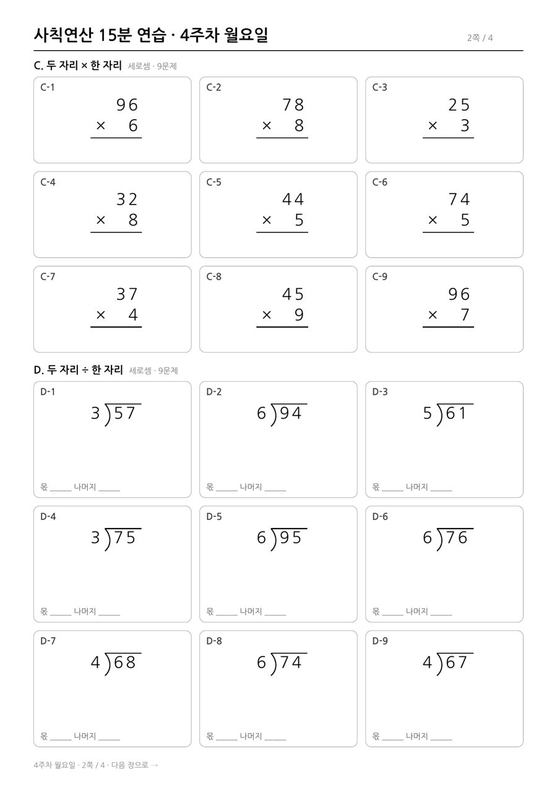
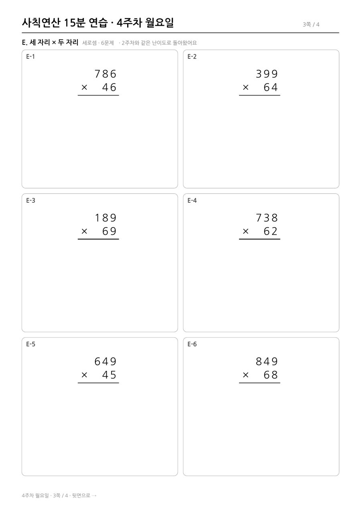
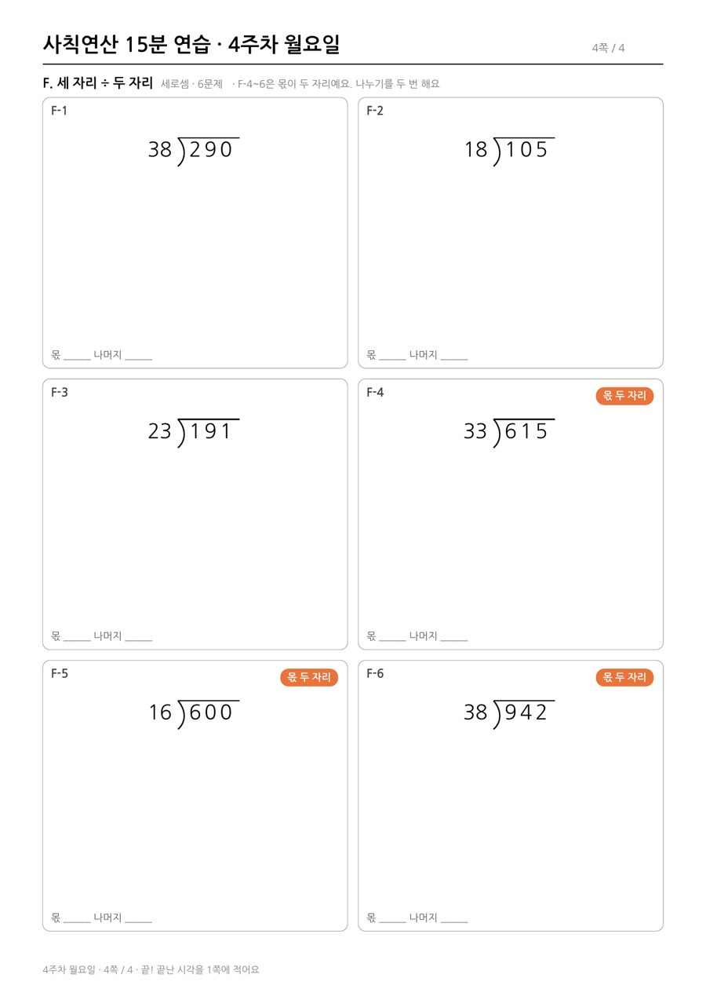

초등 4학년 · 사칙연산 · 4주차
4주차: 몫이 두 자리인
나눗셈 시작
2주차를 풀어 보니 세 자리 ÷ 두 자리(몫 한 자리)는 한 주 내내 다 맞혔고, 세 자리 × 두 자리도 많이 좋아졌어요. 그래서 4주차는 나눗셈만 한 단계 올렸어요. 한 번에 한 가지만 바꿔요.
이번 주에 바뀐 점
- F 세 자리 ÷ 두 자리: 6문제 중 3문제를 몫이 두 자리인 문제로. F-1~3은 지금까지처럼 몫이 한 자리, F-4~6은 몫이 두 자리예요(예: 738 ÷ 23). 문제 칸에 '몫 두 자리' 표시가 있어요.
- E 세 자리 × 두 자리는 원래 난이도로. 3주차의 쉬운 단계(E1·E2)를 지나 1·2주차와 같은 난이도로 돌아와요. 집중 연습이 통했는지 확인하는 주예요.
- A·B·C·D는 그대로.
- 기록표에서 F를 둘로 나눠 적어요. 몫 한 자리(F-1~3)와 두 자리(F-4~6)를 따로 보면 어디서 막히는지 보여요.
몫이 두 자리인 나눗셈, 이렇게 풀어요
- 앞 두 자리를 나눠 몫의 십의 자리를 구해요. 73 ÷ 23 → 3, 73 – 69 = 4
- 남은 수 옆에 일의 자리를 내려 써서 다시 나눠요. 48 ÷ 23 → 2
- 마지막에 남은 수가 나머지예요. 48 – 46 = 2 → 738 ÷ 23 = 32 … 2
하루 구성 (78문제)
미리보기

1쪽 · 가로셈 A·B

2쪽 · 세로셈 C·D

3쪽 · 세 자리 × 두 자리

4쪽 · 세 자리 ÷ 두 자리 (이번 주 새 문제)
앞 주차가 없다면 1·2주차와 3주차부터 시작해 보세요.